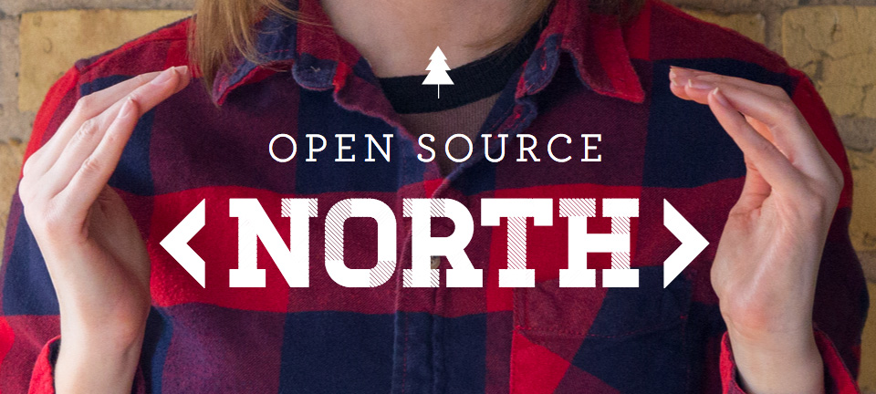
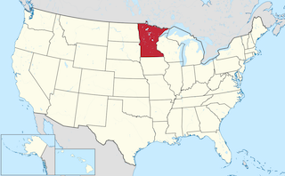
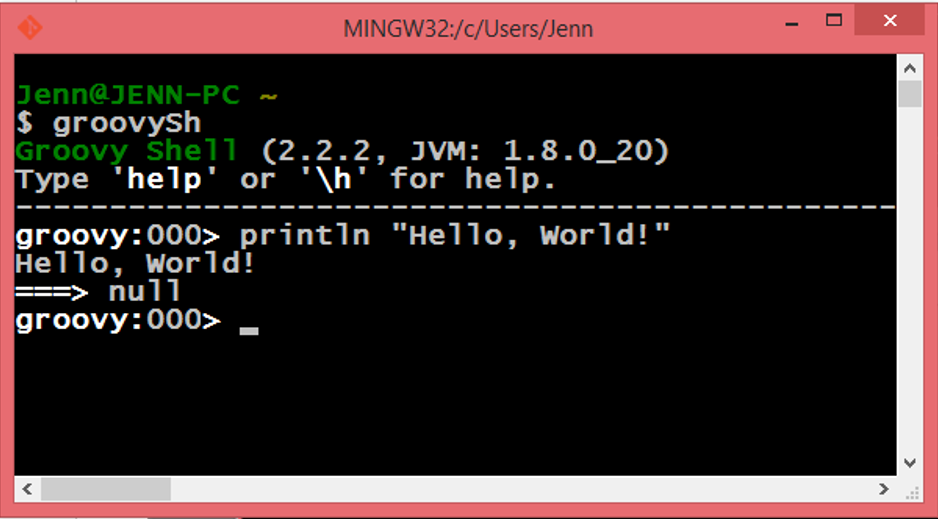
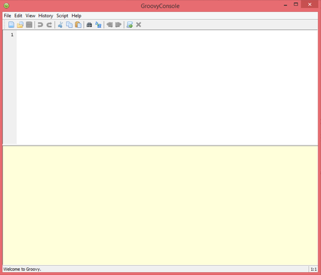

Introduction to Groovy
October 3, 2015

by Jenn Strater @jennstraterCurrent
About Me
Professional
- Senior Consultant - Object Partners
- Co-Founder - Gr8Ladies
About Me
Experience
source: http://tjvantoll.com/2014/12/29/so-you-want-to-write-a-tech-book/About Me
Minneapolis, MN

About YOU
- Students
- Professional Developers
- JAVA
- .NET
- PHP or Ruby
- JRuby, Scala, or Clojure
- Groovy
Agenda
- Background & Ecosystem
- Getting Started
- Concepts
- Data Types
- Collections/Loops
- Functions
- Closures
Agenda
- Object Oriented Programming (OOP)
- Scripting
- File Processing
- APIs
- Functional Programming
Groovy
- Dynamic, compiled language for the Java Virtual Machine(JVM).
- Interoperable with existing Java libraries
- Concise, easy to read code
- Used by many major companies including:

Open Source
Apache
To contribute: https://github.com/apache/incubator-groovy
The Groovy Ecosystem
When to use Groovy
- existing JAVA libraries
- developers know JAVA or another JVM language
- quick prototyping
- scripting
- writing tests
When Not to use Groovy
- lots of legacy code in another language
- need 'bare metal' level performance
Getting Started
- Download Locally
- SDK Manager (formerly GVM)http://sdkman.io/
curl -s get.sdkman.io | bash
http://groovy-lang.org/download.html
Groovy Shell
Groovy Console
Web Console
Things to Remember
- There is more than one way to do almost anything.
- It's probably optional.
- semi-colons
- typing
- parenthesis around parameters
- return statements
- By default, the last command executed is what's returned.
Hello, World!
groovy>println "Hello, Open Source North!"
Hello, Open Source North!
===>nullStrings
(examples in console)
- Single Quoted
- Double Quoted
- Multi-line
Collections
Lists
(examples in console)
Conclusions
- Groovy
- provides the benefits of the JVM platform
- adds features to enhance productivity over JAVA
- is similar to other languages such as Ruby and Python
Questions?
jenn@gr8ladies.org
References
- Groovy in Action, 2nd Edition
- groovy-lang.org